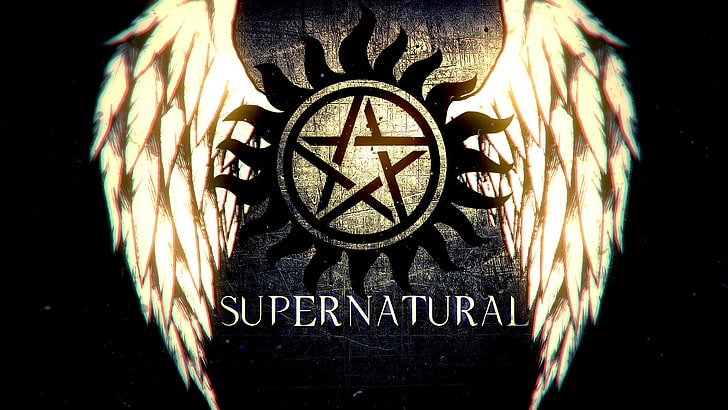
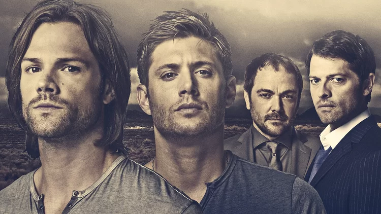
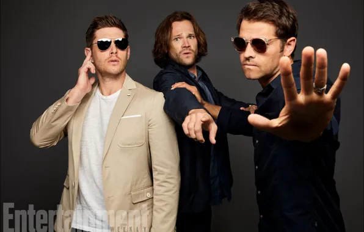

Supernatural
Storyline and Sean Arcs
Collected by: Christen 11/11/24
Season 1
The first season starts off as the brothers begin searching for their father, John Winchester. For several episodes, Sam and Dean Winchester receive contacts and travel around the USA looking for John. The series begins with the death of their mother, Mary Winchester, at the hands of the demon with Sam (as a baby) as a witness, and their lives as hunters in search of the demon that killed their mother.
22 years after Mary's death, Sam now goes to college and lives with his girlfriend, Jessica Moore, but at one point Dean shows up to tell him their father has gone missing. Sam hesitantly goes on the hunt with Dean, and their first encounter is with a ghost. After that, Dean and Sam return to find that Jessica has been killed by the Yellow-Eyed Demon. Sam travels with Dean in order to get revenge for his girlfriend and his mother and travels with Dean to get back, at the same time searching for their father. On the way, they face ghosts, shapeshifters, Wendigos and other creatures such as vampires and demons. They also meet new people, while introducing the audience to Bobby Singer. Sam is also revealed as we learn of his past, as he meets someone who has special powers like him.
The season ends with Sam and Dean finding their father, but only to lose him again as he is captured. Dean and Sam eventually find him, but he is revealed to be possessed by Yellow-Eyes, who injures Dean very badly.
Yellow-Eyes then tells Sam of his intention to what he wants with him. Sam shoots John in the leg with the Colt, where he rushes both John and Dean to the hospital, only to crash into a truck driven by a possessed driver., thus ending Season 1.
Season 2
The second season revolves around Dean and Sam searching for the Demon, Yellow-Eyes. The second season picks up where the first season left off. As Dean is in a coma and dying, John Winchester sells his soul to the Demon in order to save Dean's life. The Impala is also destroyed. When John dies, Dean promises something to him. Dean and Sam stay in contact with Bobby, all while meeting new characters such as Ash, Ellen, and Jo Harvelle, who lives in a roadhouse. Jo and Ellen have also lost someone, who was partners with John Winchester. Dean and Sam encounter new creatures, such as zombies, werewolves, the Croatoan Virus, hellhounds, crossroad demons, and old enemies, such as ghosts and vampires and demons. The Winchester Brothers also frequently get into trouble with the law now, as indicated to an accident in the previous season. The season ends with the roadhouse being destroyed, Ash being killed, Ellen and Jo missing and yellow-eyes capturing Sam. Sam and other special children battle it out to stay alive, but only one of them can survive. Many are killed, as there is a traitor in the midst.
The penultimate episode ends with Sam being killed and the finale begins with Dean selling his soul to a crossroads demon. Dean is given one year to live, as Sam is brought back to life. They travel to a graveyard, where one of the special children opens the gates of Hell. Bobby and Ellen team up with Sam and Dean to fight yellow-eyes and Dean kills the demon with the Colt, with some assistance from their father's spirit. As a consequence, dozens of demons escape. The season finale ends with Sam and Dean setting out to stop them, as well as breaking the contract that Dean had with the demon.
Season 3
This season is about Sam and Dean trying to break the deal that Dean made the season finale prior to this season. They set out to find the demon in charge of Dean's contract. Sam and Dean encounter numerous demons that have escaped, due to the gates of hell being pulled open. Dean is having the time of his life, as he has one year left to live. The brothers meet an old foe and make a new one by the name of Bela Talbot. They also make a new ally known as Ruby, who is a demon. The brothers encounter several foes and are hunted down by the law until they are declared dead halfway through the season. Specials include a Christmas special, and a special involving Bobby. Another episode revolves around Dean as the brothers attempt to stop some changelings, while Dean meets a former lover known as Lisa Braeden with whom he had a one-night stand. ("You think it's so easy doing one-night stands... well try playing in a rock 'n roll band!") The new foe, Bela Talbot proves worthy as she can steal supernatural objects, such as the Colt from the brothers. They attempt to track her down in order to get the Colt back but realize a dark secret about her. She has a contract with a demon as well, and reveals the name of the demon in charge, just before being killed off-screen by a pack of hellhounds. The season finale focuses on Dean's time nearly being up, as they track down Lilith, with Bobby helping them.
As they close in on her, they discover she has taken Ruby's original form, and Dean's time is up, with Lilith letting the hellhound in the room, as it forwards on Dean and mauls him to death. A distraught Sam watches from close up, and as Lilith is about to kill him, she soon discovers that he is immune to her powers, due to his abilities. Lilith flees, and Sam cradles Dean's lifeless body. The scene ends with Dean calling out for Sam, and then cuts to black.

Season 4
Season 4 starts off with Dean being mysteriously pulled out of Hell by an unseen force. Dean has been gone for four months and visits Sam and Bobby, who are also puzzled by his sudden resurrection. Dean, Sam and Bobby attempt to find what pulled him out, and enlist the help of a psychic known as Pamela Barnes. they managed to discover the name of the being, known as Castiel, but this comes at a price. The sight of Castiel burns Pamela's eyes out. The brothers attempt to find the being, which is then known that he is an angel. The brothers discover that he pulled Dean out of Hell, as God has work for him. We also see that something has happened to Sam in the past few months, as his abilities grow stronger, which means he can now exorcise demons. Dean and Sam face old enemies, as well as new ones, and make new friends such as Pamela and Chuck Shurley, a prophet for God. Dean and Sam continue their hunt for Lilith, as Castiel tells them she plans to open the 66 Seals to let Lucifer out of Hell. Dean confronts Sam of his actions after discovering what he has done and discovers that Ruby is back in a different body. In the middle of the season, Sam and Dean locate a woman who hears the angels speak, but later discover that she is also an angel. The angels plan to kill her, but Sam and Dean want to help her. Deans discovers that Sam has been drinking demon blood, which makes him stronger. Sam is locked in Bobby's panic room, and Dean is also confronted by a demon, whom he later kills.
The season finale starts with Sam leaving Dean to kill Lilith with Ruby, and Dean trying to find and stop him, but Dean is kidnapped by the angels and is told that The Apocalypse must not be prevented, as it will cleanse the earth. Sam and Ruby locate Lilith, and Sam kills her until Ruby reveals that Lilith's death is the final seal. Azazel's intentions are finally revealed, as he was to have a special child that would open Lucifer's prison and become Lucifer's vessel. Ruby betrays Sam and tells him that she was working for Lilith all along, and Lilith was the only one who knew. Dean appears and kills Ruby with her own knife, and the doors close as Lucifer's prison opens.
Season 5
This season picks up where the last one left off. Dean and Sam reconcile as the prison opens, and prepare to die, but they are soon pulled out onto a plane. Sam and Dean encounter Chuck who tells them that Castiel has been blown to pieces. They re-encounter an old enemy, known as Meg Masters from season 1, who threatens them, and Bobby is with them, as he is possessed. Bobby saves Sam and Dean by stabbing himself. During the first episode, it is revealed that there is a weapon that can stop the Apocalypse, Micheals sword. But soon the Zachariah reveals that Dean is the vessel to the Michael the Archangel. Castiel appears, revived and stops Zachariah. Meanwhile, a man whose family has been killed is stalked by Lucifer, who wants to use the man as a vessel.
During this season Dean and Sam encounter the Four Horsemen of the Apocalypse- War, Famine, Pestilence, and Death. During season 5, for two episodes, Sam and Dean part ways, only to be back together after Dean is transported to the future where he learns that the world is in ruins and Sam has given into Lucifer's demands, essentially resulting in Lucifer himself possessing Sam's body.
Sam also discovers that he is Lucifer's true vessel, and Sam and Dean set out to stop Lucifer and Michael, and both agree they won't be vessels. Sam and Dean encounter new enemies, such as new angels, and witches, as well as ghosts. During the season, Dean and Sam are killed and sent to Heaven, and they encounter their half-brother for a second time, who is Michael's new vessel. Sam and Dean successfully get the horsemen's rings, after a third meeting with the Trickster, now known as the Archangel Gabriel. The brothers then agree that Sam says yes so he can get close enough to trap Lucifer in Hell, although Sam will be trapped forever as well. The season finale focuses on Sam saying yes to Lucifer, so they can trick him into the portal, Although Lucifer tricks them and hides the rings. Chuck tells the story of the Impala and the adventures with Sam and Dean. Sam is possessed by Lucifer, and Adam is possessed by Michael. They begin to fight in the graveyard until Dean intervenes with Castiel and Bobby. Castiel temporarily forces Michael away with a holy fire molotov, and an angry Lucifer kills him. Lucifer beats Dean, badly injuring him, but Bobby shoots at him with a gun. Lucifer snaps his neck, and as Lucifer is about to hit Dean again, he remembers the toy soldier in the Impala. Michael reappears, and Sam gains consciousness and traps he, Lucifer, Michael and Adam into the pit, which closes up. Dean is distraught, and Castiel reappears, healing Dean and reviving Bobby, thanks to God reviving him again. Dean and Bobby depart, and Dean travels to Lisa's house, where he sits with them to have dinner. Chuck disappears into thin air mysteriously. As a distraught Dean sits down to dinner with Lisa and Ben, Sam watches from outside, as a lamp post flickers out, implying if he is Sam or Lucifer.
Season 6
This season is set a year after season 5. This season starts with Dean living with Lisa and Ben and lives a normal life. He no longer uses his Impala, and no longer hunts demons or other creatures. Dean is poisoned by a Djinn, after hallucinating about Azazel. Sam saves Dean from his poison, and Dean wakes up in a dark room. Sam is now living a full hunter life. After a brief meeting with his maternal family, the Campbells, including his grandfather, Samuel Campbell. Dean does join Sam eventually, and Castiel comes shortly after. Dean begins to notice Sam acting differently, and they eventually find out that Sam doesn't have a soul. His soul is in the cage with Lucifer and Michael. So they begin to hunt for Sam's soul, and Crowley comes along and tells them that he is responsible for bringing Sam back. With this, they begin to work for Crowley, until they confront him and Castiel burns his bones. Dean later makes a deal with death to get Sam's soul back, and this sends Sam into a week-long coma. When he wakes up, he doesn't remember what happened when he was soulless. He does find out about it from Castiel. After that Dean is forced to break ties with Lisa and Ben, and Sam remembers a bit of hell. Not to mention Balthazar, the rogue angel sends them into an alternative reality. Later on, they face the Mother of All, and Dean defeats her after she reveals that Crowley is alive. So they begin to look for Crowley, only to find out that Castiel is working with him.
Then Crowley kidnaps Ben and Lisa in order to make Dean stop. Dean goes out of his mind looking for them and thanks to Balthazar, he finds them. When he gets there, he finds Lisa possessed by a demon and is forced to exorcise it despite it injuring her body. Unable to put them into any danger, Dean asks Castiel to erase Lisa and Ben's memory of him.
Castiel does the unthinkable and breaks down Sam's wall inside his head in order to distract Dean. While Sam does battle in his head, Castiel betrays Crowley and Balthazar brings Dean Castiel's location. Unfortunately, Castiel, having discovered that Balthazar has betrayed soon kills his former friend with an angel blade.
So Dean and Bobby head to Castiel's location with Sam later joining them, only for them to discover a shocking and horrifying truth: Castiel is now the new God.
Season 7
After declaring himself God, Castiel goes forth to try and punish all the wrongdoers in the world, garnering attention. Very quickly though, he discovers that he had absorbed Leviathan as well who are breaking free. Sam and Dean manage to return the Purgatory souls but fail to return the Leviathans who seemingly kill Castiel before vanishing. The Leviathans inhabit the bodies of many different people around the world, with Sam and Dean learning their weakness Borax, though it has minimum effectiveness on the Leviathan leader, Dick Roman. After Roman kills Bobby, Dean becomes obsessed with taking the Leviathans down and learns of a facility they are making, only to learn it is a facility to cure cancer as one Leviathan puts it: "We're only here to help". The spirit of Bobby later confirms that while they are curing disease, they are doing it as part of their grand plan to turn humanity into the perfect food source. With the help of Castiel, the brothers learn that the only way to kill the Leviathans is with the "bone of a righteous mortal washed in the three bloods of the fallen" and set out to find those three bloods. Eventually, Dean and Castiel kill Dick but are dragged into Purgatory as a result while Sam is left alone to deal with Crowley, who plans to rise to power now that the Leviathans are disorganized.
Key plot points presented in the season were Sam struggling with the constant hallucinations of Lucifer and the ghost of Bobby "haunting" Sam and Dean through his alcohol flask. Bobby's rage towards Dick Roman slowly causes him to become a vengeful spirit, and Sam and Dean trying to deal with this fact ultimately leads them to burn his flask at his request, destroying Bobby.
Season 8
The ferocious beasts, called the Leviathans, are effectively apprehended, by the team effort of the Winchesters, Castiel, and Meg, by the death of their leader, Dick Roman. Dick, God's first Leviathan, is killed by Dean, with the Bone of a Righteous Mortal Washed in the Three Bloods of the Fallen, the only implement in existence that can slay the Leviathan. The "kick" of the weapon, as Crowley calls it, sends Dean and Castiel to Purgatory - the realm where monsters prey on each other for eternity. There, Dean and Castiel team up with a vampire named Benny, and the three seek a portal, which can be accessed by humans, as a way out.
Much of the season involved the Hell Trials. These trials were designed by God to close the gates of Hell forever. These included:
- Killing a Hellhound.
- Freeing an innocent soul from Hell.
- Curing a demon.
The first two were successfully completed by Sam and the third was almost to be done when Sam was stopped by Dean. It seemed that the Scribe, Metatron failed to mention that Sam would die if he completed the third trial.
Meanwhile, Castiel became an unwilling pawn in the hands of Metatron. Castiel thought that completing the Heaven trials would lock the angels in Heaven and prevent their power struggle from reaching Earth. Instead, Metatron banished every angel (except himself) to Earth, to live as humans.
It is for the first time, the brothers let monsters live, believing them to be capable of change, just like humans. Benny, a vampire and Kate, a werewolf were spared the brothers' wrath. Unfortunately, Benny had to be killed to save Sam in Purgatory.
Season 9
Angels are on Earth, having fallen from Heaven in the last season by Metatron's evil schemes. Angels are amassing and possessing hosts. Meanwhile, the demon Abaddon breaks out of Hell and possesses numerous militia with her demons, and starts a war against Heaven and Earth. The angels are warring against each other, having had their wings burned off in their falls, and are unsure of what to do or who to follow. Metatron appears to Castiel and other angels, sending angelic hitmen after the brothers. Sam is tricked by Dean into letting the angel Gadreel possess him, in the hopes that Gadreel will heal Sam's internal wounds caused by the Trials. Meanwhile, Dean and Crowley track down Cain, who gives Dean his mark. Dean then tracks down the First Blade, which is the only weapon capable of killing Abaddon. Dean is later stabbed to death while fighting Metatron, but the Mark of Cain revives him as a Knight of Hell. They also manage to find a way to open Heaven again for the angels - for the Cube of Metatron which opens a portal to Heaven even when sealed. On Earth, Metatron is becoming far more arrogant and believes he is God. He says he will be called "X". Metatron goes around healing people and performing "miracles" to "prove" he is God. He converts an angelic faction, but Castiel fights him and tricks him into admitting his desires to enslave all angels which every single angel on Earth hears, and they run towards Metatron and shackle him in anger. Castiel imprisons Metatron in Heaven's dungeon, and temporary order is restored to Heaven. They also manage to find a way to open Heaven again for the angels - for the Cube of Metatron which opens a portal to Heaven even when sealed.
Season 10
Dean is with Crowley and Crowley suggests they take over Hell and revamp it to Crowley's desires. However, Dean is not happy to be bossed about by the King of Hell and he suggests that they stop making deals with human clients. Crowley is always humiliated by Dean, and Crowley keeps getting threatening phone calls from Sam, who says he'll avenge Dean and kill Crowley. Finally confronting the demonic Dean, Sam tries to reason with his monstrous brother but Dean refuses to make any contact. Sam and Castiel team up to cure Dean, which is successful. Dean learns Cain is on a murder spree, his first demon killing in season 9 in a hundred years bought up a lust for violence. Cain fights with Dean, and eventually, Dean disarms Cain (literally) and kills him. Dean and Sam fight many more monsters, such as the goddess Calliope, who is attracted to a school show of Chuck's Supernatural books. Castiel gets his grace back, Metatron becomes human, Charlie finds the book of the damned, and Sam goes behind Dean's back to remove Mark of Cain, unintentionally releasing the Darkness, and Dean kills Death.
Season 11
Following the release of the Darkness, the season follows the Winchesters and their allies as they find themselves fighting the most powerful supernatural entity they have ever faced, unlike anything else they have ever gone up against before.
Immediately after its release, and tipping over the Impala, Sam sees that Dean is gone and goes to look for him, finding him in a field where Dean had a conversation with the Darkness, which apparently turns out to be, or at least, takes the form of a woman in a black dress. Dean says that she thanked him for setting her free.
Meanwhile, Castiel is still suffering from the dog attack spell the witch Rowena put him under and starts to attack others. He also remembers that when he attacked Crowley, the King of Hell escaped from his current vessel and into another one. He then orders his demon minions to get rid of the spell holding his vessel in place.
As Sam and Dean drive away from the old diner, they find a Sheriff's deputy named Jenna Nickerson and head to a hospital to help others. Upon arriving there, they find people with black veins which Sam calls Rabids, people who have been forced to let their inner darkness out. This being an effect of the release of the Darkness. They also find a human baby in the mix named Amara. Meanwhile, as a manhunt for him begins, Castiel prays to the angels, begging them to help him from hurting others and is willing to take whatever punishment they bring him.
As Dean, Jenna, and the baby make it out of the hospital, Sam using himself as a diversion gets infected and starts to sprout black veins. Eventually, after he prays to God for help, he encounters a reaper named Billie who is apparently disappointed that Death is dead and says that the next time Sam and Dean are killed, she will ensure that they stay dead and even that she will toss them into the Empty, a place no soul nor entity nor being can escape from. As the angels find Cass, they start to torture him and after Hannah arrives, she explains that alarms are going off in Heaven. He implies that those alarms are for the release of the Darkness. As the tortures continue, Castiel escapes and Hannah dies trying to save him. Crowley manages to get back in his vessel and his subordinates reveal that the Darkness is free, especially that when Michael and Lucifer themselves apparently shouted throughout Hell from the Cage.
Dean and Jenna go to her grandmother's house and when they realize Amara is levitating objects, she calls Dean and her grandmother calls an exorcist, who turns out to be Crowley impersonating a priest. However, back at the hospital, Sam finds a cure for the "Rabids": Holy Fire. And he makes a ring of holy fire and cures a few others as well. The baby turns out to be Amara as a child as Dean finds the Mark of Cain on her. Amara sucks out Jenna's soul and she becomes soulless, like how Sam once was. After Crowley kills Jenna, Dean attacks him as he plans to take the baby, but fails as the baby walks out and quickly grows up. Sam and Dean eventually reunite and find Cass at the bunker, while Crowley finds Amara and takes her to Hell as an offering.
The Winchesters look for ways to find and stop the Darkness, but first, they search for Rowena to undo the spell on Cass. They find her and she does so, but she escapes. At Crowley's Lair, Crowley becomes Amara's "uncle" and her appetite grows and she starts to feed on demons. Eventually, Sam reveals to Dean that he has been having visions about a being he describes as the opposite of the Darkness, which he thinks is God himself.4
While Sam and Dean work on ordinary cases involving ghosts, monsters, and even along the way Imaginary Friends, the brothers, and Cass also start searching for ways to defeat the Darkness. Even after finding Amara where Crowley is keeping her, Dean doesn't appear to strike at her and he fails and she escapes. Meanwhile, at the place, Sam's visions start to become more revealing, as he starts to have visions of Lucifer's Cage. Castiel eventually finds Metatron, who has started a business of catching what he calls reality but is also miserable about his current tatus. After beating and throwing him, Castiel asks Metatron what he knows about the Darkness, considering he was God's scribe. Metatron reveals that in order to create the Earth, Heaven, even the entire Universe, in order to start creation itself for that matter, God didn't only imprison the Darkness, but he had to betray and sacrifice her and Metatron says that the Darkness is the only thing God's really ever known, his only kin... his older sister.
Although Dean hates the idea, they intend to go the Limbo, the deepest place in Hell, and speak to Lucifer about the Darkness. They enlist the help of Rowena to summon him. And when Dean goes to find Amara at a church where she attacks people, Sam awaits outside of a supernatural cage in Limbo surrounded by powerful fire and covered in enochian sigils, and eventually, Lucifer himself appears in the cage, manifested as his original vessel, Nick. He and Sam talk about the Darkness and how to stop her while Amara and Dean talk about her issue with her brother. After three angels find her and try to attack her, she kills them all and summons a powerful smiting attack that knocks her out. In Hell, Lucifer says that he will help them stop her, but only if he possesses Sam and returns to Earth. Sam says no and Lucifer extinguishes the fire, erases the warding, and summons Sam in the cage and still tries to make him say yes, especially when he reveals that it wasn't God who sent Sam the visions, but it was Lucifer. When the Darkness was set free, it damaged the cage and allowed Lucifer to reach out to Sam. Though Sam strongly considers, he still says no and Lucifer starts to attack him.
Rowena reveals that Lucifer came to her in a dream and said he needed her help to get Sam to him and she would join him. But, after Cass finds Amara, having survived the attack, she summons him to Dean with a message and eventually, as Rowena conjures the spell to banish Lucifer, Dean and Cass head down to the cage and help Sam survive in a fight against Lucifer. As Lucifer also kills Cass, Lucifer is banished by Rowena. After leaving Hell, Cass apparently stays and reveals the before Lucifer could be banished back to the Cage, Cass said yes to him and Lucifer possessed him. After freeing and then killing Rowena, Lucifer takes back Hell and makes Crowley his slave, calling him "Puppy".
Meanwhile, Sam and Dean eventually find possible ways to defeat Amara, using Hands of God, powerful objects said to contain the power of God himself. Even after finding one, Sam, Dean, Rowena, and Crowley try to get Lucifer out of Castiel's body but it fails and he absorbs the power of the Hand of God and uses it on Amara, but it fails and he is taken against this will by Amara. And she starts to torture him to draw out God. And as fate would have it, eventually, God himself finally returns. After having a conversation with Metatron and reconciling with Lucifer, he decides to help stop her. And though his original plan of weakening her with Witches, Demons, and Angels and trying to imprison her again using the Mark fails, Amara fatally attacks God(Chuck), causing him to start dying.
Although they think Amara seems impossible to destroy, God tells Sam, Dean, Cass, Crowley, and Rowena that she does have one weakness: Light with the power of 10,000 suns. So they collect souls to build a bomb. And Dean is the one to bear it. After talking with Amara, whom starts to feel bad about attacking and nearly killing her brother Chuck, Dean convinces her to forgive him. So she summons him to a garden area and the two reconcile and decide to go off together for a while. However, Amara leaves Dean with a thank you gift and he finds his mother alive and resurrected. However, in the bunker awaits a British woman who banishes Cass with a banishing sigil and shoots Sam, leaving his fate unknown.
Season 12
Dean meets his mother for the first time in 30 years after The Darkness sends him the gift which he wanted most. Sam has been captured by Lady Bevell and is being tortured as punishment for his past sins. Dean convinces Mary that he is her son and thereafter discover that Sam has been captured. Dean, Mary, and Castiel devise a plan to rescue Sam. Lucifer has been possessing numerous vessels in his quest to find one that is suitable for him. He finally possesses Vince Vincete a veteran rock star and kills Rowena in the process. After a concert where Lucifer plans to destroy all those who attend, his vessel disintegrates before he finally has the President of the United States as his vessel. Sam and Dean try to warn the president but are presumed to be assassins who are trying to kill the president and are thereby detained at an unknown center. They both fake being dead in order to escape and are reunited with Castiel and Mary. Mary begins to work with Arthur Ketch of the Men of Letters in order to get back into hunting. Mary tricks the brothers into stealing the Colt from one of the four princes of hell Ramiel.
After Mick Davies is killed the brothers acknowledge that the Men of Letters have gone rogue. Meanwhile, the president has made his assistant Kelly Kline pregnant and Castiel realizes that a Nephilim is to be born. Sam, Dean, and Castiel try convince Kelly about the impending danger. While Lucifer has been captured and being tortured by Crowley. Sam and a few hunters gather to defeat the Men of Letters while Castiel retrieves Kelly after killing Dagon. Lucifer is released by Crowley's minion demon and heads on to find his son. In the finale, Kelly gives birth to the Nephilim while Crowley sacrifices himself to trap Lucifer. Crowley and Castiel die trying to kill Lucifer while Mary and Lucifer are pulled into the rift created by the Nephilim's birth. Dean kneels down in despair after witnessing Castiel being killed while Sam is shocked when he arrives to see Jack the Nephilim grown into a teenager.
Season 13
Dean and Sam are left reeling from the loss of so many allies and family members and their new responsibility to 'raise' Jack, with Sam willing to give the boy a chance while Dean is immediately concerned due to his heritage. In the other world, Lucifer keeps Mary alive as a hostage to trade for his son when he returns home, but finds himself confronted by the alternate Michael, who has killed his Lucifer and won the war. Although Dean becomes increasingly bitter at their recent losses, he gains a new sense of hope when Jack unintentionally brings Castiel back to life. Things become complicated when Men of Letters Arthur Ketch is revealed to have escaped death through a spell he received from Rowena, Ketch taking Castiel and a weakened Lucifer prisoner after Lucifer escapes back into this world when Michael tries to use his grace to create a portal so that he can conquer the other reality.
While the Winchesters' efforts to return to the other world to rescue Mary fail, Ketch is revealed to be working with Asmodeus, who reveals in turn that the source of his power is Gabriel, who actually faked his death during his confrontation with Lucifer but was sold to Asmodeus by the children of the real Loki. After their first attempt to enter the other world traps Jack in that reality, the Winchesters retrieve the demon tablet, a translation of it reveals the ingredients needed to open a portal to the other world. As Jack sides with Mary and the humans against the angels, the Winchesters and Castiel gather the ingredients for the spell to open the portal while Lucifer tries to re-establish himself as king of Heaven in the absence of God and other archangels. After Ketch rescues Gabriel, allowing the Winchesters to use his grace as part of the spell, the initial raid on the other world fails to achieve more than Dean rescuing the alternate version of his deceased friend Charlie Bradbury, but Gabriel flees in fear after an attack on the bunker by Asmodeus. With Heaven in desperate straits after Lucifer fails to hold the angels together, Castiel is charged with finding Gabriel while the last ten angels try to keep Heaven in order, leaving the Winchesters to mount a new assault on the other world with Gabriel and Lucifer. They are able to rescue a range of human survivors from the other world, including the alternate versions of Bobby and Charlie, but Gabriel is killed in the process and Lucifer and the alternate Michael follow them through.
As Lucifer takes Jack's power for himself, Dean is forced to make a deal to act as the vessel for the alternate Michael to stop him. Dean is able to stay in control long enough to kill Lucifer, but the season ends with Michael taking control of Dean's body and departing.
Season 14
Three weeks after Apocalypse World Michael possessed Dean, the archangel is confronting individuals of every different species, questioning their wants and dismissing them as hopeless, until he encounters a vampire who expresses his desire to eat. Praising his desire as pure, Michael decides to raise monsters above mankind and begins experimenting with archangel grace and monsters, making them immune to their former weaknesses. Sam, Bobby from Apocalypse World and Mary track Michael down, and Michael seemingly leaves Dean's body after becoming irritated with Dean's resistance. Meanwhile, Jack becomes sick due to the loss of his powers, and dies later, his soul ascending to Heaven. But the Shadow being from the Empty, believing Jack's soul belongs to it and irritated with Castiel for escaping it, attacks Heaven and makes a deal with Castiel to take the angel in place of Jack, but only when Castiel lets himself be happy again.
Dean, Sam, Castiel and the newly resurrected Jack decide to take down Michael and his army of monsters once and for all, but Michael retakes control of Dean and unleashes his monsters on the city. The group subdue Michael, and Dean takes back control of his body and imprisons the archangel in his mind. Dean, with the help of Billie, builds the Ma'lak Box to imprison himself in, in order to protect the world from Michael. But Sam convinces Dean that they'll find another solution, and Dean makes a wish that brings John Winchester back from the past for a day. Dean is then injured on a hunt, and Michael is unleashed. Michael possesses Rowena temporarily, and kills most of the Apocalypse World hunters, but Jack burns off his soul to murder Michael and takes Michael's grace to restore his powers.
Nick, who survived Lucifer's death and suffers psychological damage from so many years of being Lucifer's vessel, sets about getting justice for the deaths of his family. His killing spree leads him to the prophet Donatello Redfield, and Nick communicates with the recently awakened Lucifer in the Empty. Nick tricks Jack into giving him Jack's blood, and tries to resurrect Lucifer to be his vessel again. Jack confronts, and then kills Nick in front of Mary. After Mary berates Jack for viciously murdering Nick, the now soulless Jack kills Mary by accident, leaving the boys without their mother for a second time. Castiel prays for God to return and fix Jack, but the angels manipulate Jack into solidifying their power. Out of options, Sam and Dean imprison Jack in the Mal'ak Box, but Jack escapes. God returns and tells the boys that they must use a gun that he built to kill Jack, but Sam and Dean, frustrated with God's disappearances and inaction, refuse him.
Angered at their defiance, God smites Jack, who wakes up to see the Shadow and Billie waiting for him in the Empty. God decides to end the world, and unleashes every vengeful spirit from Hell back on Earth and sets an army of corpses upon Sam, Dean and Castiel.